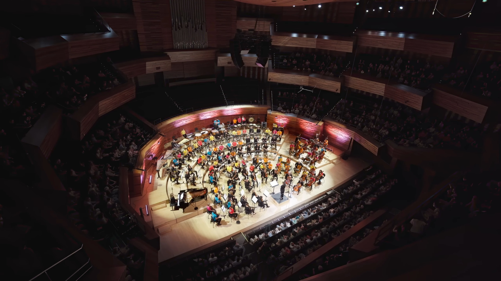

2024 · Orchestration
Six projections sans images
Création à l’Auditorium de Radio France · musique de Reinhardt Wagner.
Lire la présentation sur Orchestre à l’École ↗Voir / écouter le projet sur YouTube ↗

Le projet
Matthieu Roy réalise l’orchestration de ce projet de Reinhardt Wagner, créé à l’Auditorium de Radio France en juin 2024.
Cette page distingue volontairement la composition de Reinhardt Wagner et le travail d’orchestration de Matthieu Roy.